is a voice chat application that aims to help people relieve their emotional stress in the hopes of enhancing their sleep quality caused by pressure and depression.
Our team interviewed 29 people who have had insomnia and did research on what causes them to have poor sleeping quality and how they deal with their sleeping problems in order to better understand the problem area of people who cannot sleep effectively at night. We discovered that the majority of participants' stress is related to their emotional state. The research on how people deal with their emotions in terms of excitement, anxiety, annoyance, and loneliness was then conducted by our team. Based on our findings, we noticed that Individuals require a safe area to communicate their emotions and experiences. Also, some people can't sleep properly because they're pondering and looking for a solution or assistance to an issue they've encountered. In the end, our team believes that building an empathetic atmosphere in which users may express their emotions and ease their tension by chatting to others is a solid strategy.
As our team was only required to explore the problem space and provide potential solutions to address the problem, we only designed a few sketches to demonstrate our team 's ideas for this research project. Nevertheless, I had taken the opportunity to further develop the user interface in hopes of crafting my design skills. Throughout the UI design process, I have learned how to set the visual hierarchy, use the component libraries and varients, and manage the design system on Figma.
Duration
5 month // 2021
Role
Researcher & UI Designer
Reading Time
15 Minutes
TL;DR
I understand you don 't have time looking into every design process. So here is the shortcut for the final design!
I hope you enjoy the prototype and continuing with the reading.
Relieving The Emotional State
"Tons of assignments and the course hurdles always make me wonder if I can graduate on time."
The brief was originally asked to discuss and identify a problem domain or challenge to focus on, and have an initial identification of the specific problem our team was addressing. As a result, our team decided to focus on the relationship between insomnia and pressure that modern people usually have as our initial problem identification.
52%
participants mentioned that work or academic pressure impact their sleeping quality
48%
participants mentioned that stressful relationship makes them hard to sleep
To dig into research for the problem identification, our team interviewed 29 participants regarding their experiences of bad sleeping quality. Most feedbacks we collected have shown that the occurrence of their close relationship or themselves and the external factors such as work or academic pressure may cause them unable to sleep, such as breaking up with their partners, having a fight with their close friends, feeling loneliness or being nervous about the job interview the next day.
Throughout our research in exploring what individuals typically would do when they have a particular mood such as being excited, surprised, disappointed, etc., we noticed that one thing that almost everyone would do is
talking to someone or a group of people about what he or she has just encountered.
To address the identified issue based on our findings, our team ultimately decided to create a smartphone application that allows users to share their thoughts and experiences with others.
We believe that by creating an empathetic environment that people can seek help, share thoughts, and have a sense of belonging ultimately to make users feel someone actually knows my feeling, they will alleviate their emotion and can sleep calmly afterwards.
The Proposed Features and Conceptual Design
Throughout the research phase, our team proposed and developed Sleep Dealer, a voice-based communication platform that has three main features to satisfy different people 's need when they have stress or question that bothers them.
Specifically, sleep dealer offers three features: The random chatroom is designed for people who are indecisive that they can seek help; users in this chatroom are allowed to discuss any topic the user would like to bring up to express or confess their experience and feelings with others comfortably.
The second feature is the topic chatroom, in which users can create a chatroom with “topic tags ”. This feature is designed for people who want to listen to others talking and discuss.
Last but not least, Sleep dealer offers a confession room, which enables you to record your secret and send it to random person anonymously. What is more, if the random person resonates with your secret, he or she can send the request to know you. Once you accepted the request, your information will reveal and able to chat together with the person.
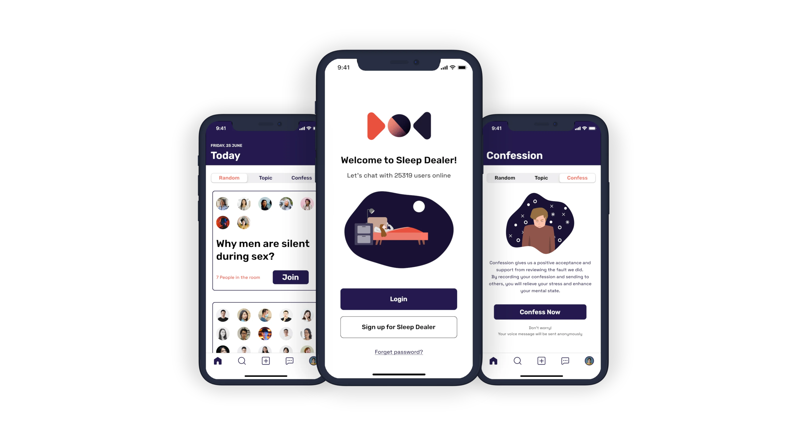
Perspective from Individuals
Target users
Individuals with insomnia suffer from mental problems such as depression and stress.
Specifically, the target audience includes:
Individuals who did something bad and wanting to confess
For smartphone users who usually use their phone before going to bed
For students who want to find someone to talk about the common interest or topic
For someone who cannot sleep due to the fight with their partners
User 's objectives
Relieve or alleviate their stress and depression by talking to others.
Specifically, the user 's objectives include:
People who want to share their day and experience
People who want to find the solution when having the problem (e.g. relationship advice)
Students who want to express their thoughts to their friends
Couples who want to seek the solution from other people after the fight with their partners
Someone who wants to confess their inner secrets
Perspective
from The Company
Company 's vision
Creating an empathy environment that helps people to relieve their stress and
depressing feeling with Sleep Dealer. Individuals feel Sleep Dealer helpful in assisting
them to address their problem.
Minimum viable product (MVP)
Random chatroom allowing users to chat anything
Topic chatroom allowing users to talk in a specific topic
Confess room allowing users to record their inner secrets and send it to random people
Personal account and notification settings
Nice-to-have features
Search the specific chatroom
Private message
Search other users
Success Metric
Increase the used time on Sleep Dealer
Increase the engaged time with other users
Provided feedback from the participants to see whether the user sleeps well after using Sleep Dealer
Monitor Metric
Average time on the chatroom
Average used tags from users
Average private message sent from each user
User Interface Design Setup
Information architecture
After confirming the design specs and MVP, I designed the information architecture allowing me to know the user flow. As user flow are beneficial to the design process, I can leverage the chart to think about how to design an intuitive interface to enhance the user 's experience.
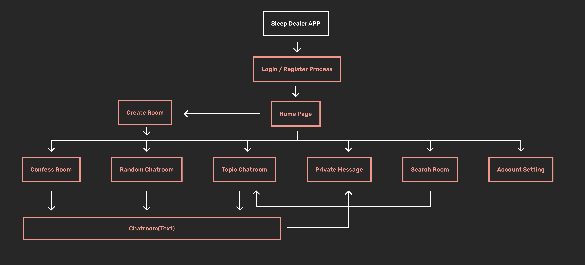
Colour scheme
Next, I have made the colour palette to set the design guideline of Sleep Dealer. Employing the colour palette allows me to enhance the brand identity and can always support better information readability
when it comes to visual hierarchy.
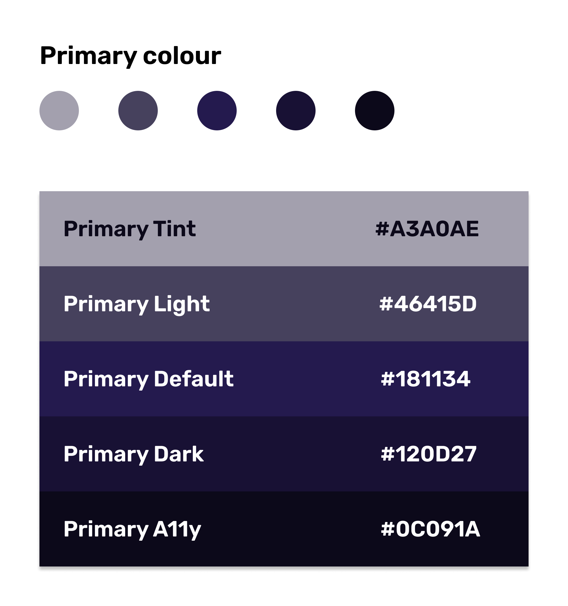
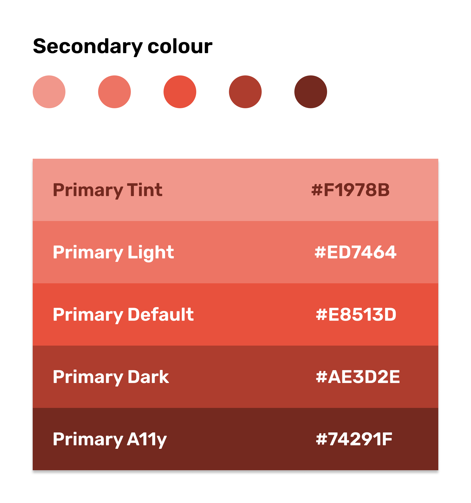
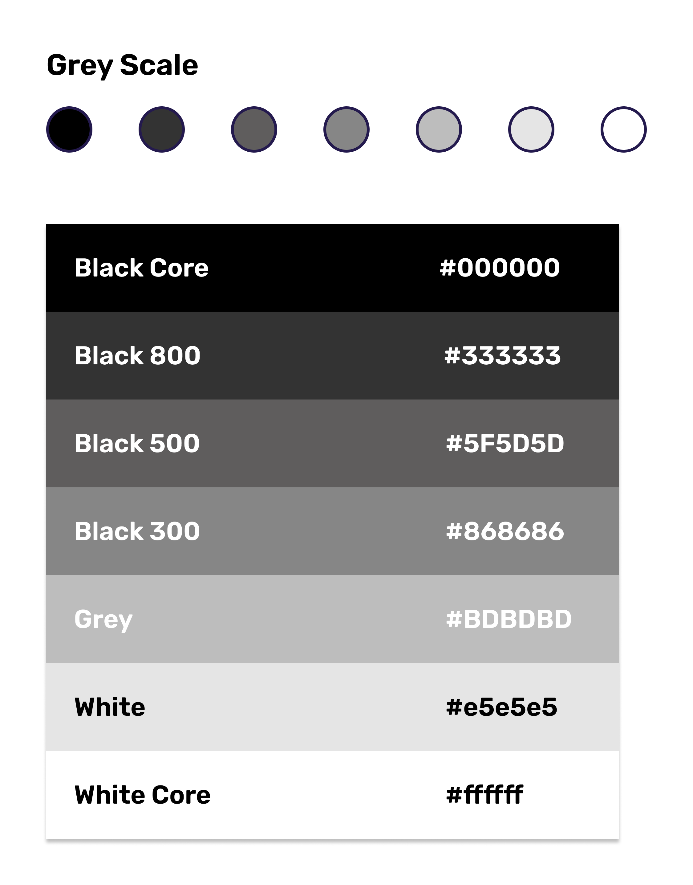
Colours heavily affect an individual 's preference. For the primary colour (Hex: #181134), deep blue can be represented as integrity and knowledge, which perfectly meets the design concept that we want users to have a solution or resonation through Sleep Dealer.
Regarding the secondary colour (Hex: #E8513D), I used bright pink to highlight and bring a vivid, lively impression to young target audiences.
Greyscale is an important element in UI design. Designers can leverage the variety of grey colour to hint or notify the users of what information is more or less important on the page. This also demonstrates the importance of visual hierarchy.
Typography
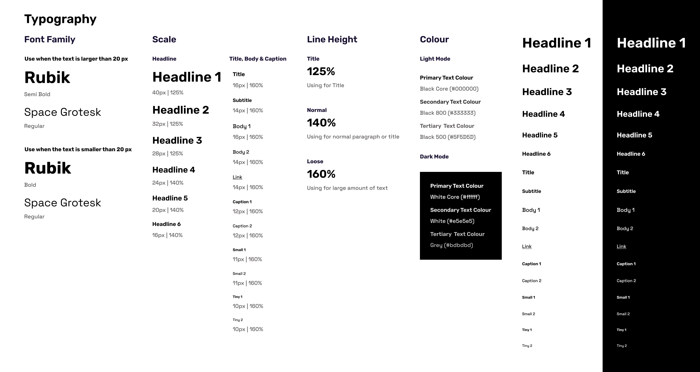
Typographic system is one of the most important aspects of the design system. Similar to the colour palette, the font size also impacts the user 's attention order, which demonstrates the power of typographic hierarchy. Typography also allows the developers to follow the guideline from the early stage to the final stage of product development. This also ensures a great user experience when the users using the product.
I chose Rubik as the headline font since the font 's rounded corner leads to a pleasant and friendly feel. Also, Rubik is one of the sans serif heavyweight fonts; this can perfectly display the highlight. For the body and the text, I chose Space Grotesk for the weight reason. Users can easily distinguish what the heading, body and title are based on the font 's weight.
Wireframes and Component Library
At the early stage of the user interface design, wireframes allow designers to quickly and easily iterate through ideas and content flows. It also enables designers to scaffold the skeleton rapidly and show the sketches to the stakeholders.
Since I attempted to design for the iOS version, I have read through The Human Interface Guidelines from Apple, and utilise the iOS 14 UI Kit from Figma Community. As the UI Kit allows the app to achieve a consistent appearance across the system and they are also customisable, I have used the components such as top navigation, segmented control, and tab bar to meet the consistency.
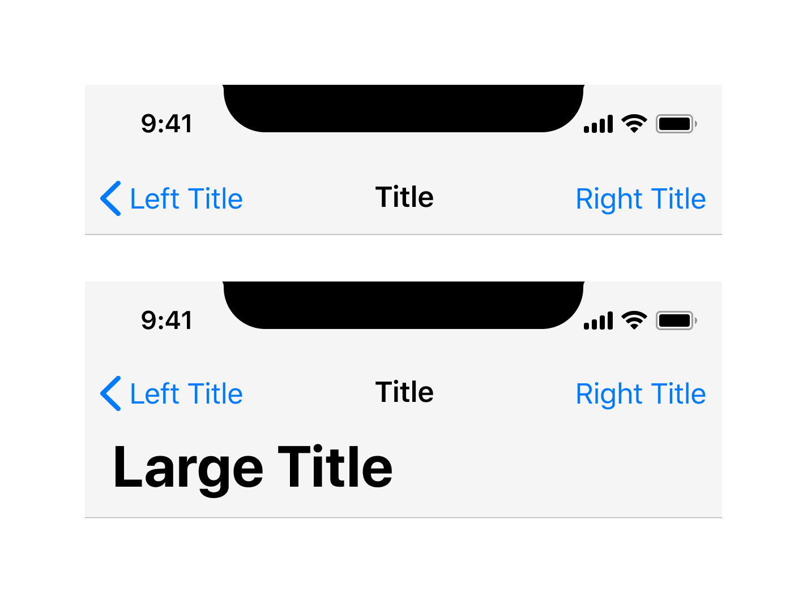
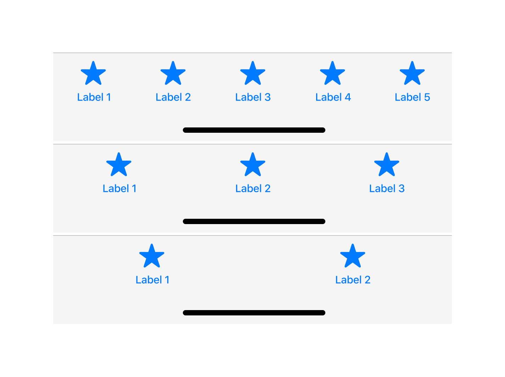
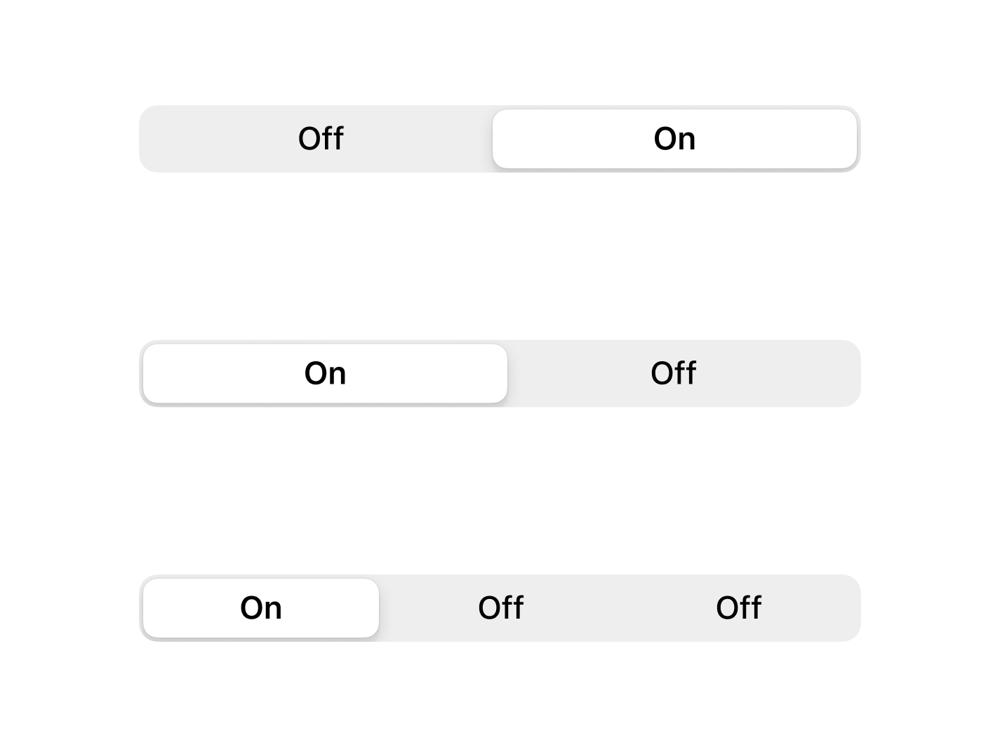
Login / Register process
This section 's objective is to make users quickly enter the product and enhance the brand identity with the product 's goal. Therefore, the grey circles temporary represent the logo and the illustration at the wireframe stage. Also, a typical login process usually contains login, register, and third-party options such as Facebook, Google, and Apple, allowing users to choose what method they want to enter with the application. Last, a 'forget password 'option should be placed on the welcome page and the login page to help users recover their accounts.
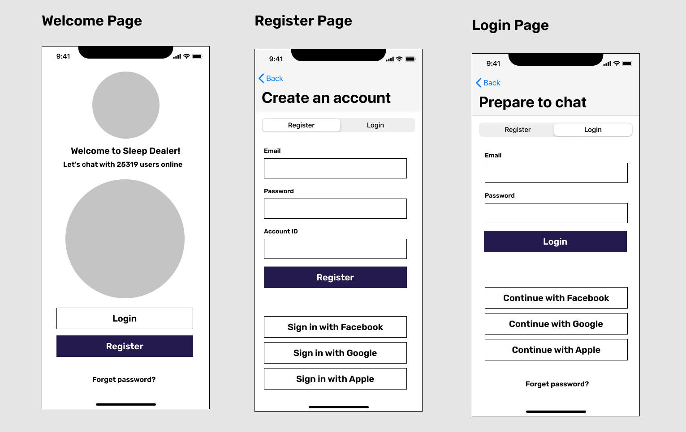
Home page
This section 's objective is to make users easily navigate to the room they interested in. I considered that making three main features stay in the same section allows users to switch or change the feature they want easily; therefore, I applied the segmented control to swap the feature intuitively. When the users find the room they are interested in, they can press the Call to Action button to navigate the room. Once they are in the room, they will chat in audio or type the texts in the discussion. This allows people who don 't want to talk also have the ability to engage with other audiences.
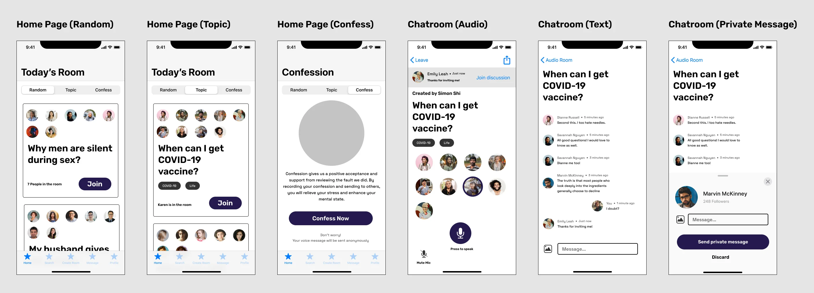
Search page
This section 's objective is to make users easily find the room or the person they are interested in. Also, this section allows users to explore and find the currently popular chatroom and see who also join this room. In addition, users can also search the particular user 's profile to know their interest; and they can always decide to follow the user anytime.
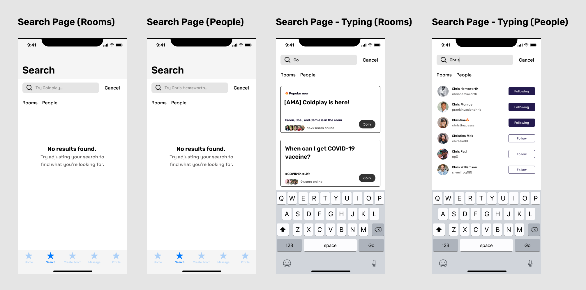
Create room
This section 's objective is to make users create their own room. At the initial stage, I set the Call to Action button to light blue to hint that this button is disabled until they finished the tasks above. This shows an example of visual hierarchy. Also, as the hint is given below every input area, this helps users to understand further what they need to do with the given task. This section also offers a variety of topics allowing users to select the room 's theme; users can also create a customised tag in this section.
What 's more, the Invite friend section will link to the subpage that gives users an option to invite their close friends. Once the user has completed the task, the toggle button allows the user to select whether to make the chatroom privately or publicly. The toggle button in UI design is a perfect example of affordance. Through the colour change, users can understand when a setting is on or off.
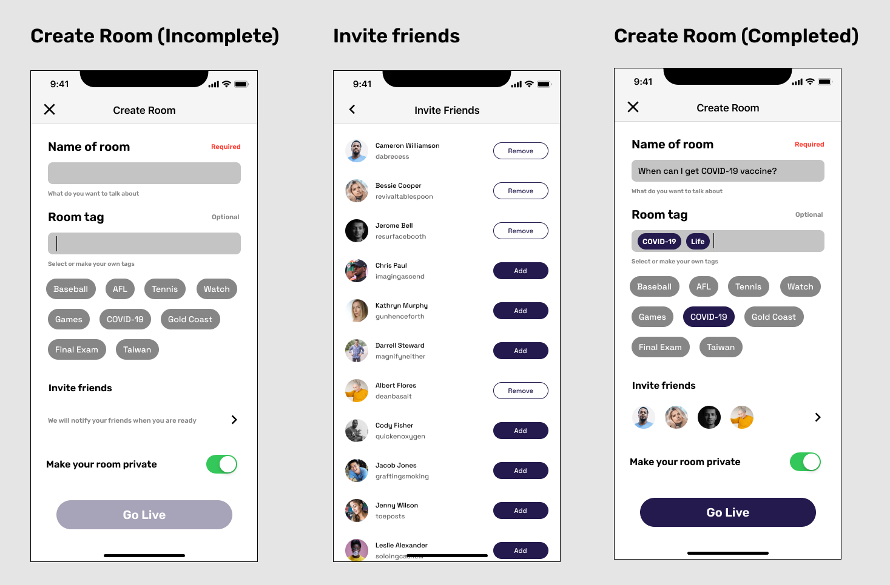
Profile
This section 's objective is to make the user see his or her current status. The information includes the cover photo, profile image, the followers and following users, and the recently used tags. Also, users will be able to edit their profile information and decide whether shows their task publicly in this section. This is designed for people who care about their private matters.
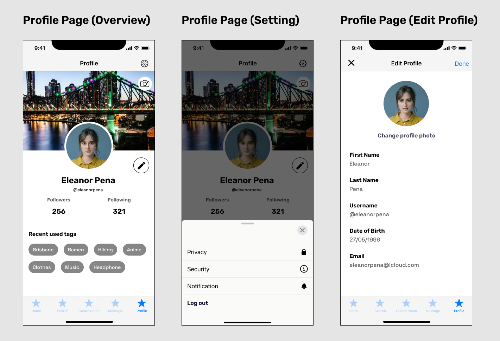
Component library
Aside from the iOS 14 UI kit, I have made a component library that allows me to design reusable elements such as buttons, tab bars, and icons. This not only allows me to design rapidly but also maintain the consistency of the app. For the logo, I have created a circle to represent the combination of the sun and the moon. I designed the circle on Adobe Illustrator and made the particle effects. As the logo is an organic shape, this also provides a friendly feel for the users. Regarding the illustration, I have leveraged the colour system to make the illustration consistent with the app. As I intended to create a fluid and lively feel, I designed an irregular shape using the Figma plug-in called Blobs for the background. Also, since the illustration is SVG format, it can be applied to different devices such as desktops or tablets without losing image quality.
In terms of the icons for the tab bar, I had once debated whether to put a text under every icon or not to implement it. Adding texts can give the users an extra clarification if they have lost in the metaphors. I finally decided to remove the text since I believe people are already familiar with the designed icons. Also, the designed icon can now be seen everywhere in most apps. I believe designing the same style can reduce user 's cognitive load and enhance user experience.
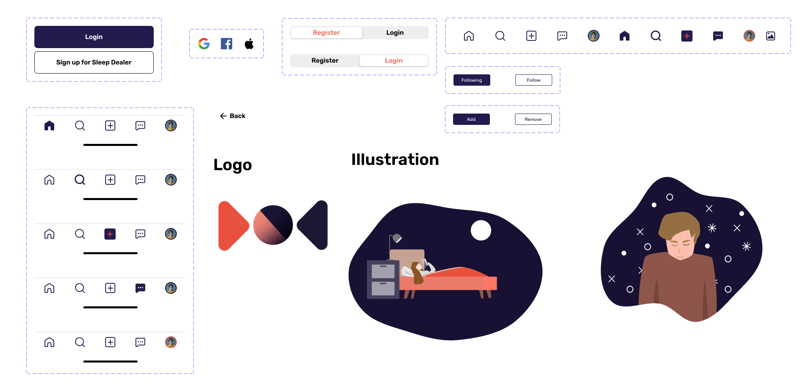
The next section will jump to the high-fidelity prototype directly. Normally, a well-structured user interface design should have been through rounds of UX evaluation to understand user 's pain points and see what section or elements they have been confused with or what part they have taken the most of the time due to what reason. This typically requires collecting both qualitative and quantitative data to analyse the behind reasons. As this project aims only to practice my UI design skills, the following section will only introduce the final product in visual design.
High-Fidelity Prototype Demonstration
After several ideates and minor visual changes to meet the consistency, I have completed the high-fidelity prototype with the function to connect each page. Throughout the design process in designing prototypes, I have learned how to use overlay, animation, delay, and transition in Figma. The following are the demonstration of the prototype.
This project aims to hone my user interface design and prototyping skills in Figma. Throughout the design, I 've been successful with using multiple design tools, managing the components, colour system, and typography for the interface design. Also, with the knowledge that I gained from the previous project Moovie, I 'm able to leverage the HCI knowledge such as Fitts 'law, Hick 's law, Gestalt theories, affordance, and signifier to implement my design knowledge on Sleep Dealer.
Being limited to the UX evaluation, this project lacks the exploration of identifying how and what users might encounter through the application. Before designing on Figma, our team has done multiple user testing on Discord to discover whether designing a voice-based communication platform is a good approach. Also, this project didn't evaluate whether the use of Sleep Dealer can improve user 's sleep quality. To solve the remaining questions, I will focus on using Pittsburgh Sleep Quality Index to discover whether users have successfully improved their sleeping quality while using Sleep Dealer in the future.